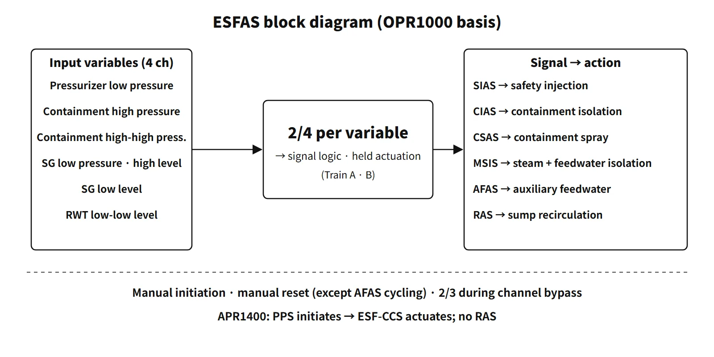

Systems & Equipment · C-SY-011
Engineered Safety Features Actuation Signals (ESFAS) — Which Variable Wakes Which Safety System
Which process variable starts which engineered safety feature, how the logic holds and bypasses the signals, and how the APR1400 splits initiation from actuation.
The engineered safety features actuation system (ESFAS) is a safety-class instrumentation and control function that automatically actuates engineered safety features (ESF) such as safety injection, containment isolation, containment spray, main steam isolation and auxiliary feedwater when selected process variables reach their setpoints. Its purpose is to keep the consequences of design basis accidents (DBAs) within the acceptance criteria. Its outputs are the engineered safety features actuation signals.
In CE-type plants (OPR1000, APR1400) the ESFAS initiation functions sit in the four-channel plant protection system (PPS) together with the reactor trip functions [1][2]. This note focuses on the types of signal, their inputs, what they actuate, their logic, and how they relate to accidents.
Principle and mechanism
The signal chain and its logic
Each variable is measured in four channels, and bistables compare the measurements with the setpoints. When two of the four channels for the same function trip (2/4), an initiation signal is produced. It then passes through the Train A and B actuation logic to operate pumps, valves and breakers [2].
- Selective 2/4: in analog CE-type designs, two redundant actuation subsystems each check the bistable outputs of the four sensor subsystems for 2/4 coincidence [2]. In the APR1400 the ESF-CCS group controllers apply selective 2/4 again to the signals from the four PPS divisions [1].
- Completion of protective action (seal-in, latch): once initiated, the actuated state is held until manually reset, even if the variable recovers; reset is possible only after the variable has returned to normal [2]. The exception is AFAS. The APR1400 excludes from the latch only the cycling part of AFAS, which repeatedly feeds the SG as its level falls and recovers [1].
- Manual initiation: every signal can be initiated with system-level switches on the safety console in the main control room. The APR1400 also has MSIS switches in the remote shutdown room [1].
- Operating bypass: to prevent unnecessary SIAS and CIAS during normal cooldown and depressurization, only the pressurizer low-pressure input is bypassed. The bypass can be applied only at low pressurizer pressure and is removed automatically when pressure rises again [2]; in the APR1400 (DCD Section 7.3) it can be set at or below 400 psia and is removed automatically at 500 psia or above, and between the two a bypass already in place is kept [1]. The containment high-pressure input is never bypassed.
- Channel bypass: removing one channel for maintenance or testing turns 2/4 into 2/3. In the APR1400 an interlock prevents two channels from being bypassed at the same time [1].
- In the APR1400, pressurizer low pressure and SG low pressure have variable setpoints. During cooldown the operator can lower the setpoint to follow the pressure, and it rises automatically when pressure increases [1].
NSSS-ESFAS signals and their inputs
The OPR1000 counts AFAS-1 and -2 as one function group, giving six signals (SIAS, CIAS, CSAS, MSIS, AFAS, RAS). The input variables of each signal are combined with OR: when two of the four channels of any one variable trip, the signal is generated by that variable [2]. OPR1000 setpoints are unit-specific design values and are not used here; the setpoints shown are the published APR1400 DCD nominal values [1].
| Signal | Input variables (APR1400 nominal setpoint) | Actuates |
|---|---|---|
| SIAS safety injection | Pressurizer low pressure (1,810 psia), containment high pressure (1.9 psig) | Safety injection pumps, SI valves, boric acid addition, EDG start, cooling water alignment |
| CIAS containment isolation | Same two variables as SIAS | Isolation valves on containment penetration piping |
| CSAS containment spray | Containment high-high pressure (20.03 psig) | Opens spray header valves, starts spray |
| MSIS main steam isolation | SG low pressure (855 psia), SG high level (90 % NR), containment high pressure | Main steam and main feedwater isolation valves of both SGs |
| AFAS-1/-2 auxiliary feedwater | Low level in each SG (25 % WR) | Starts auxiliary feedwater pumps and opens valves to the intact SG |
| RAS recirculation | RWT low-low level (CE plants with an RWT, such as the OPR1000) | Opens sump suction valves, stops low-pressure safety injection pumps |
The actuated equipment summarizes the NRC's published CE-type manual and the APR1400 DCD [1][2]; detailed equipment lists differ from plant to plant.
![Matrix of six NSSS-ESFAS signals with OPR1000 and APR1400 columns: SIAS and CIAS on pressurizer low pressure (APR1400 1,810 psia) or containment high pressure (1.9 psig); CSAS on containment high-high pressure (APR1400 20.03 psig); MSIS on SG low pressure (855 psia), SG high level (90 % NR) or containment high pressure (1.9 psig); AFAS on SG low level (25 % WR); RAS on RWT low-low level in the OPR1000 (none in the APR1400 because of the IRWST); with actuated equipment for each, an image of a pump and motor-operated valve, and a card on the 2-of-4 initiation logic](../../assets/images/concepts/c-sy-011-esfas-actuation-signals/fig1-esfas-signal-matrix.webp)
The SIAS and CIAS use the same variables as the reactor trip signals [2], so in a LOCA reactor trip, safety injection and isolation occur almost simultaneously. The aim of AFAS is to feed only intact SGs: feeding a ruptured SG would continue to overcool the primary side and keep mass and energy flowing out through the break. The logic and settings used to identify a ruptured SG depend on the plant design.
BOP-ESFAS signals are actuated by radiation monitor inputs; examples are main control room emergency ventilation and filtration, fuel (handling) building emergency exhaust, and containment purge isolation [1].
What it means in a plant
APR1400 — the PPS initiates, the ESF-CCS actuates
In Section 7.3 of the APR1400 DCD (Rev. 0) [1] the NSSS-ESFAS signals are the six SIAS, CSAS, CIAS, MSIS, AFAS-1 and AFAS-2. The names are almost the same as in the OPR1000, but the setpoints, actuated equipment and implementation differ, and there is no RAS: the water source, the IRWST, is inside containment, so there is no need to switch suction. The BOP-ESFAS signals are FHEVAS, CPIAS and CREVAS.
- Nominal setpoints: SIAS and CIAS pressurizer low pressure 1,810 psia and containment high pressure 1.9 psig; CSAS 20.03 psig; MSIS SG low pressure 855 psia and SG high level 90 % NR; AFAS SG low level 25 % WR (Table 7.3-5A) [1].
- SIAS starts the spray pumps in advance, and CSAS opens the spray headers.
- All NSSS-ESFAS signals are initiated even if two PPS divisions lose power (fail-safe).
- Response-time requirements are 40 s or less for safety injection and 6.35 s or less for MSIV closure (Table 7.3-7) [1].
From the PPS local coincidence logic (LCL, 2/4), the signals go over safety-class data links to the ESF-CCS, a four-division digital system separate from the PPS. Group controllers (GC) handle selective 2/4 and latching, loop controllers (LC) handle component-level control logic, and the component interface modules (CIM) handle the priority between manual and automatic commands.
![APR1400 signal chain: PPS sensors in four channels, bistable processors and local coincidence logic 2-of-4, a safety-class data link to the ESF-CCS group controller (selective 2-of-4 and latch), loop controller and component interface module, then pumps, valves and breakers, with manual system-level switches, the EDG load sequencer and DPS signals; below, a pressurizer pressure axis from 0 to 2,500 psia showing the operating bypass settable at or below 400 psia and removed automatically at 500 psia, the SIAS and CIAS nominal setpoint at 1,810 psia and normal operation at 2,250 psia](../../assets/images/concepts/c-sy-011-esfas-actuation-signals/fig2-esf-ccs-chain-bypass.webp)
Loss of offsite power and load sequencing
Most ESF loads are large motors, so if the accident coincides with a loss of offsite power (LOOP) they must be loaded onto the emergency diesel generators (EDGs) in steps. The APR1400 puts this load sequencer in each ESF-CCS division. When two of four undervoltage relays on a Class 1E bus actuate, the EDG starts and large loads are shed. After the EDG breaker closes, an eight-step counter connects the load groups one by one [1]. SIAS, AFAS and CSAS also start the EDGs. If offsite power is available, the EDGs stand by unloaded and the loads start in sequence on offsite power. The design ensures that the accident loads enter at the next step whether the accident comes before, with or after the LOOP.
Protection against digital common-cause failure
If the PPS and ESF-CCS fail together through a software common-cause failure, automatic ESF actuation is lost. The diverse protection system (DPS) and diverse manual actuation means therefore back up selected ESF functions [1].
Signals and design basis accidents
The table shows the representative signals for each accident. Whether, and in what order, they actually occur depends on whether each variable reaches its setpoint.
| Design basis accident | Main signals |
|---|---|
| Large and small LOCA | SIAS and CIAS; CSAS for a large LOCA; later RAS in the OPR1000 |
| Main steam line break (MSLB) | MSIS (SG low pressure, containment high pressure), SIAS, AFAS to the intact SG, CSAS possible for a break inside containment |
| SG tube rupture (SGTR) | SIAS (pressurizer low pressure), AFAS; the ruptured SG is isolated by high-level MSIS or manually |
| Loss of feedwater, feedwater line break | AFAS |
| Fuel handling accident | FHEVAS and CPIAS |
Regulatory and design criteria
The criteria below are examples from the United States (US NRC) and IEEE standards.
| Basis | Key point |
|---|---|
| 10 CFR 50 Appendix A, GDC 20–24 [4] | Protection system functions, reliability, independence |
| 50.55a(h)(3) → IEEE 603-1991 [4][5] | Completion of protective action (5.2), manual initiation (6.2), operating and maintenance bypasses (6.6, 6.7) |
In digital designs such as the APR1400, the ESFAS has moved from an analog relay matrix to a digital PPS and ESF-CCS; RAS has disappeared and diverse backup functions have been added.
Easily confused pairs
| RPS (reactor trip) | ESFAS | |
|---|---|---|
| Purpose | Protect SAFDLs in AOOs | Mitigate DBA consequences |
| Output | Opens the trip breakers (one action) | Different ESF actuations per signal |
| Trains | 4 channels → trip breakers | 4 channels → Train A and B (or 4 divisions) |
| Holding | Held by the open breakers themselves | Seal-in or latch (except AFAS cycling) |
Westinghouse plants use different names. In the NRC's published Westinghouse training manual [3], safety injection (SI) actuation also produces reactor trip, emergency core cooling, Phase A isolation, auxiliary feedwater and emergency diesel start. Containment high-high pressure produces containment spray and Phase B isolation (isolation of the RCP component cooling water lines). Steam line isolation is actuated by containment high-high pressure, or by high steam flow combined with low-low Tavg or low steam pressure. Feedwater isolation is a separate function. Below the pressurizer pressure permissive (P-11), low-pressure SI can be blocked manually. Setpoints and logic details differ from plant to plant.
Key points at a glance
- Definition: a safety-class system that automatically actuates the ESF when process variables reach their setpoints, keeping DBA consequences within acceptance limits.
- Structure: 4-channel measurement → bistables → selective 2/4 → Train A/B actuation logic → equipment.
- SIAS: pressurizer low pressure, containment high pressure → safety injection pumps, EDGs.
- CIAS: same inputs → isolation of containment penetration piping.
- CSAS: containment high-high pressure → spray.
- MSIS: SG low pressure, SG high level, containment high pressure → main steam and main feedwater isolation.
- AFAS-1/2: low level in each SG → auxiliary feedwater to the intact SG (APR1400: the cycling part is not latched).
- RAS: RWT low-low level → sump recirculation (none in the APR1400 because of the IRWST).
- Features: seal-in or latch and manual reset, manual initiation, operating bypass at low pressurizer pressure (APR1400: ≤ 400 psia), 2/3 during channel bypass.
- APR1400: PPS initiates → ESF-CCS (GC selective 2/4, LC, CIM) actuates, including EDG load sequencing.
